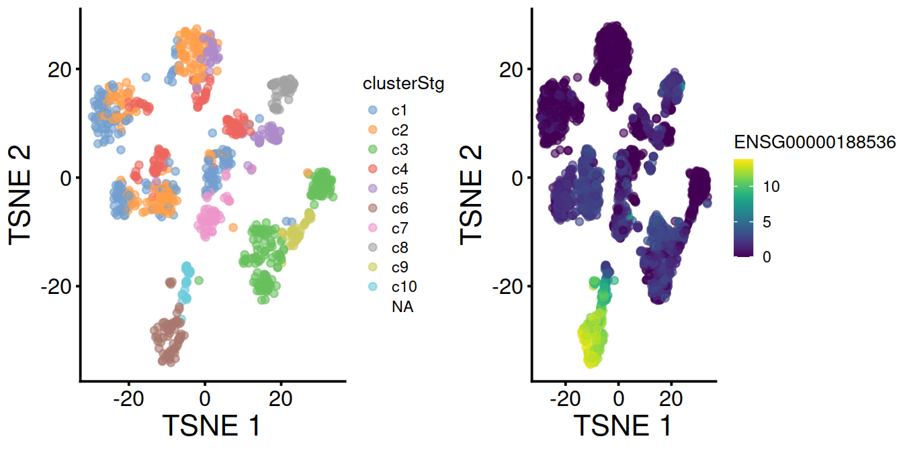
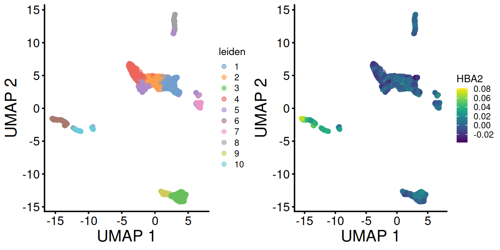
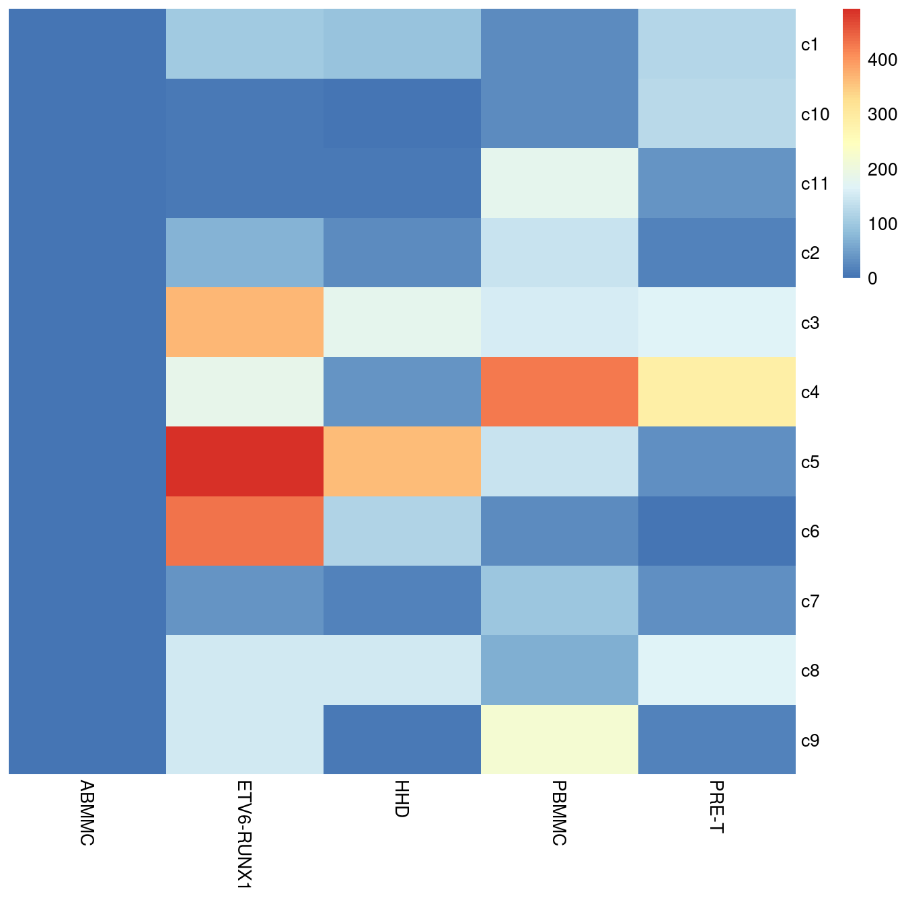
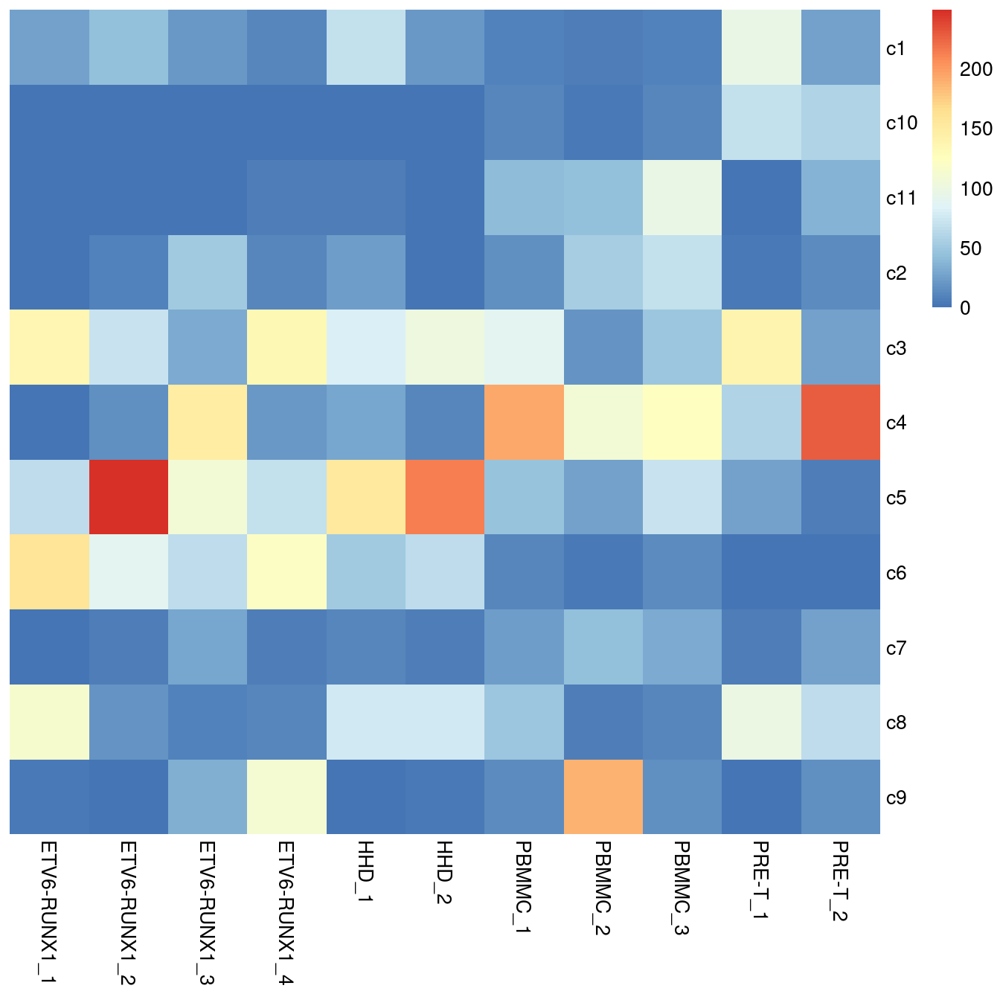
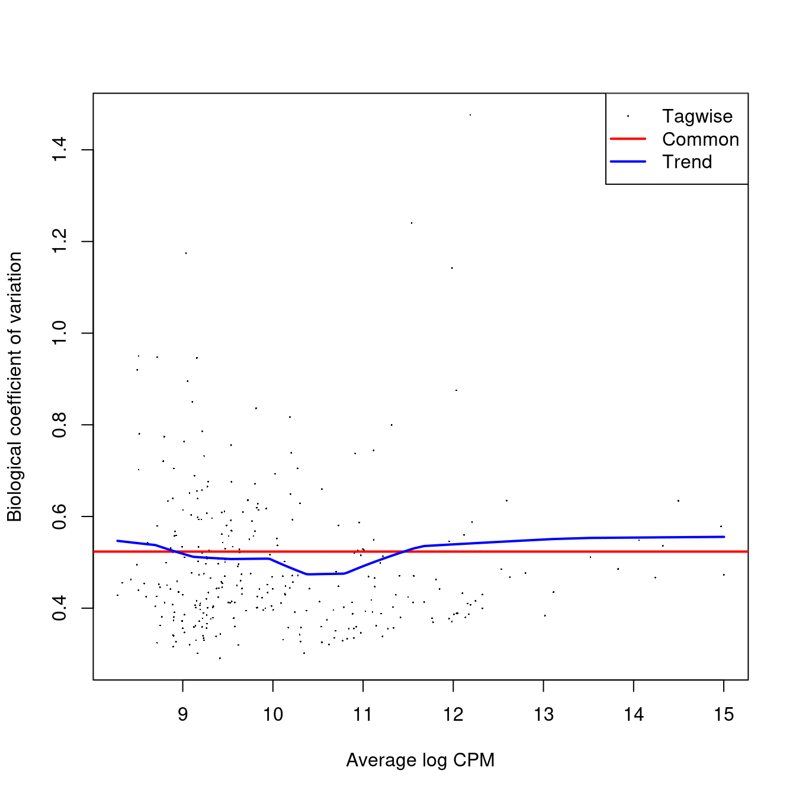
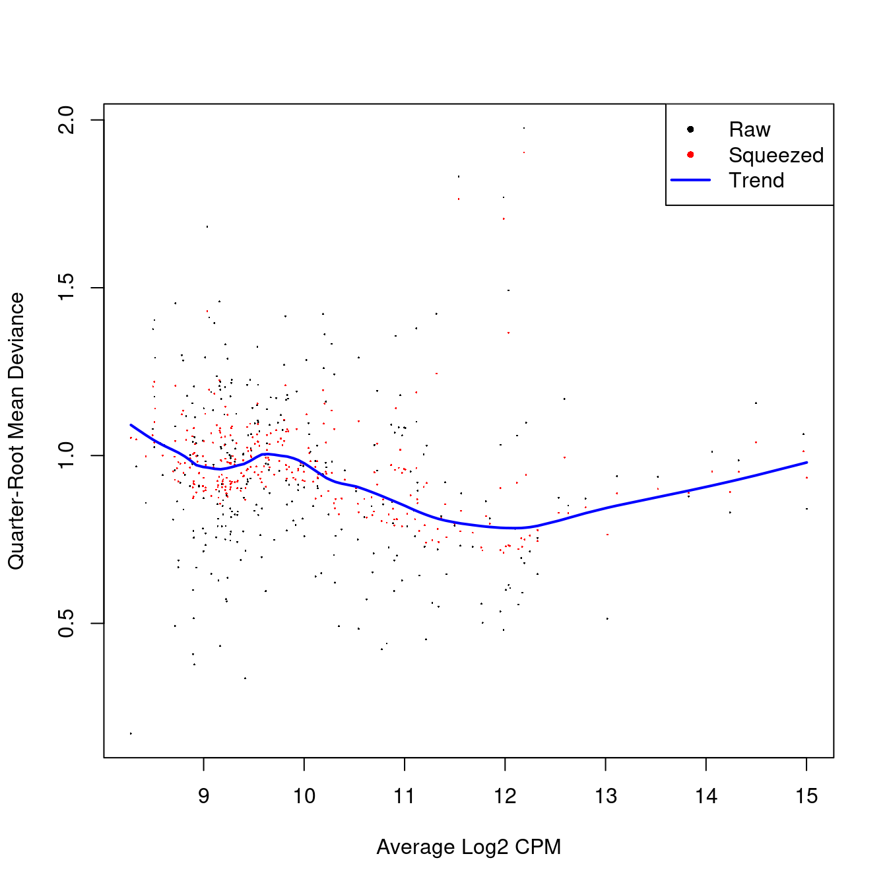
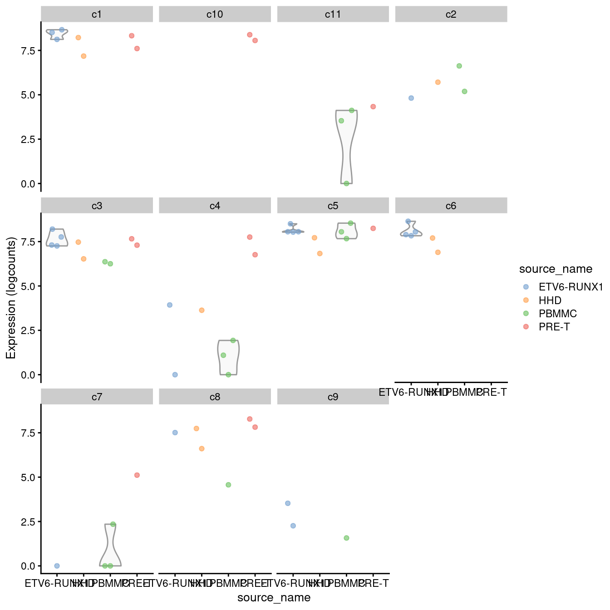
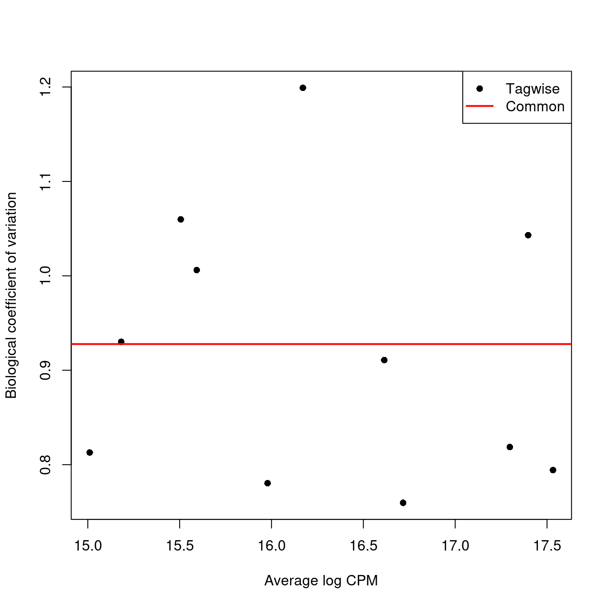
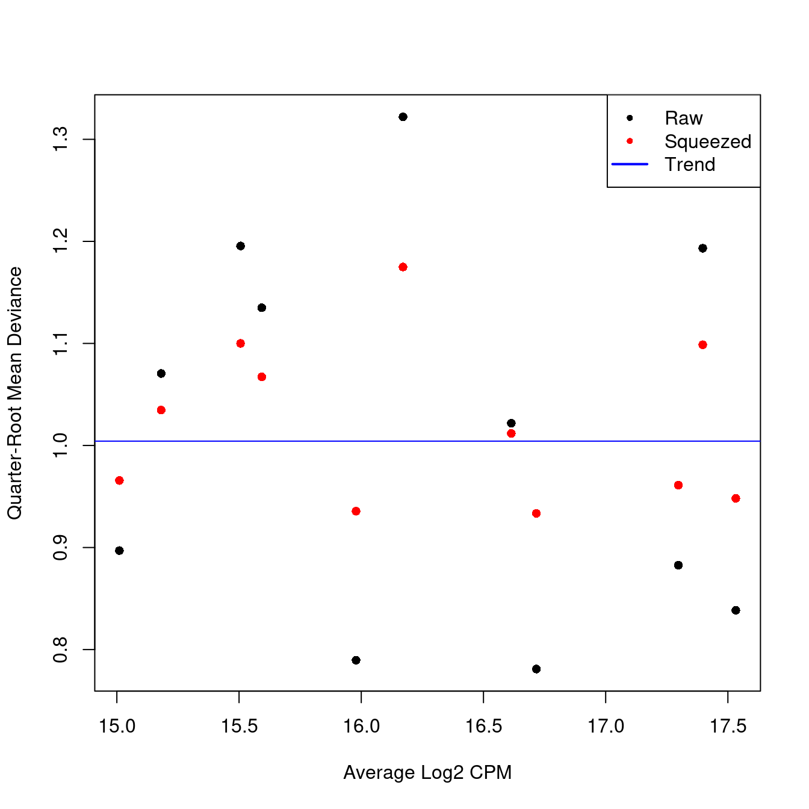

Chapter 23 Differential expression and abundance between conditions
Source: Multi-sample comparisons of the OSCA book.
23.1 Motivation
A powerful use of scRNA-seq technology lies in the design of replicated multi-condition experiments to detect changes in composition or expression between conditions. For example, a researcher could use this strategy to detect changes in cell type abundance after drug treatment (Richard et al. 2018) or genetic modifications (Scialdone et al. 2016). This provides more biological insight than conventional scRNA-seq experiments involving only one biological condition, especially if we can relate population changes to specific experimental perturbations.
Differential analyses of multi-condition scRNA-seq experiments can be broadly split into two categories - differential expression (DE) and differential abundance (DA) analyses. The former tests for changes in expression between conditions for cells of the same type that are present in both conditions, while the latter tests for changes in the composition of cell types (or states, etc.) between conditions.
23.2 Setting up the data
We will use the data set comprising the 11 samples (500 or 1000 cells per sample) analysed with fastMNN and the nested list of samples.
The differential analyses in this chapter will be predicated on many of the pre-processing steps covered previously. For brevity, we will not explicitly repeat them here, only noting that we have already merged cells from all samples into the same coordinate system and clustered the merged dataset to obtain a common partitioning across all samples.
Load the SCE object:
#setName <- "caron"
# Read object in:
##setSuf <- "_1kCellPerSpl"
##tmpFn <- sprintf("%s/%s/Robjects/%s_sce_nz_postDeconv%s_clustered.Rds", projDir, outDirBit, setName, setSuf)
#setSuf <- "_1kCps"
tmpFn <- sprintf("%s/%s/Robjects/%s_sce_nz_postDeconv%s_Fmwbl.Rds", projDir, outDirBit, setName, setSuf)
print(tmpFn)## [1] "/ssd/personal/baller01/20200511_FernandesM_ME_crukBiSs2020/AnaWiSce/Ana1/Robjects/caron_sce_nz_postDeconv_5hCps_Fmwbl.Rds"## class: SingleCellExperiment
## dim: 9799 5500
## metadata(2): merge.info pca.info
## assays(1): reconstructed
## rownames(9799): ENSG00000000457 ENSG00000000938 ... ENSG00000285476
## ENSG00000285486
## rowData names(1): rotation
## colnames: NULL
## colData names(21): Barcode Run ... type clusters.mnn
## reducedDimNames(2): corrected TSNE
## altExpNames(0):A brief inspection of the results shows clusters contain varying contributions from batches:
##
## ETV6-RUNX1 HHD PBMMC PRE-T
## c1 186 119 89 151
## c10 3 2 8 5
## c11 6 9 18 253
## c12 1 0 39 0
## c13 41 0 33 0
## c14 71 25 140 17
## c15 33 4 17 4
## c16 50 0 69 3
## c17 9 6 24 17
## c18 8 0 21 5
## c2 360 211 102 13
## c3 0 2 121 22
## c4 192 39 431 255
## c5 98 35 55 34
## c6 846 484 195 45
## c7 15 1 37 5
## c8 49 47 7 141
## c9 32 16 94 30pheatmap::pheatmap(tab,
border_color = NA,
drop_levels = TRUE,
cluster_rows = FALSE,
cluster_cols = FALSE
)
tab <- table(colLabels(sce), sce$Sample.Name2)
pheatmap::pheatmap(tab,
border_color = NA,
drop_levels = TRUE,
cluster_rows = FALSE,
cluster_cols = FALSE
)
On the t-SNE plots below, cells colored by type or sample (‘batch of origin’). Cluster numbers are superimposed based on the median coordinate of cells assigned to that cluster.
p1 <- plotTSNE(sce, colour_by="type", text_by="label")
p2 <- plotTSNE(sce, colour_by="Sample.Name2")
gridExtra::grid.arrange(p1, p2+facet_wrap(~colData(sce)$type), ncol=2)
tmpFn <- sprintf("%s/%s/Robjects/%s_sce_nz_postDeconv%s_Fmwbl2.Rds", projDir, outDirBit, setName, setSuf)
tmpList <- readRDS(tmpFn)
chosen.hvgs <- tmpList$chosen.hvgs
rescaled.mbn <- tmpList$rescaled.mbn
uncorrected <- tmpList$uncorrected
colToKeep <- c("Run", "Sample.Name", "source_name", "block", "setName", "Sample.Name2")
colData(uncorrected) <- colData(uncorrected)[,colToKeep]
colData(uncorrected)[1:3,]## DataFrame with 3 rows and 6 columns
## Run Sample.Name source_name block setName Sample.Name2
## <character> <character> <factor> <factor> <character> <character>
## 1 SRR9264343 GSM3872434 ETV6-RUNX1 ETV6-RUNX1 Caron ETV6-RUNX1_1
## 2 SRR9264343 GSM3872434 ETV6-RUNX1 ETV6-RUNX1 Caron ETV6-RUNX1_1
## 3 SRR9264343 GSM3872434 ETV6-RUNX1 ETV6-RUNX1 Caron ETV6-RUNX1_1#--- merging ---#
library(batchelor)
set.seed(01001001)
merged <- correctExperiments(uncorrected,
batch=uncorrected$Sample.Name2,
subset.row=chosen.hvgs,
PARAM=FastMnnParam(
merge.order=list( list(1,2,3,4), list(9,10,11), list(5,6), list(7,8) )
)
)
merged## class: SingleCellExperiment
## dim: 9799 5500
## metadata(2): merge.info pca.info
## assays(3): reconstructed counts logcounts
## rownames(9799): ENSG00000000457 ENSG00000000938 ... ENSG00000285476
## ENSG00000285486
## rowData names(12): rotation ensembl_gene_id ... detected gene_sparsity
## colnames: NULL
## colData names(7): batch Run ... setName Sample.Name2
## reducedDimNames(4): corrected PCA TSNE UMAP
## altExpNames(0):#--- clustering ---#
g <- buildSNNGraph(merged, use.dimred="corrected")
clusters <- igraph::cluster_louvain(g)
merged$clusters.mnn <- factor(paste0("c", clusters$membership))
#colLabels(merged) <- merged$clusters.mnn
#--- dimensionality-reduction ---#
merged <- runTSNE(merged, dimred="corrected", external_neighbors=TRUE)
merged <- runUMAP(merged, dimred="corrected", external_neighbors=TRUE)
library(scater)
tab <- table(merged$clusters.mnn, merged$block)
pheatmap::pheatmap(tab,
border_color = NA,
drop_levels = TRUE,
cluster_rows = FALSE,
cluster_cols = FALSE
)
tab <- table(merged$clusters.mnn, merged$Sample.Name2)
pheatmap::pheatmap(tab,
border_color = NA,
drop_levels = TRUE,
cluster_rows = FALSE,
cluster_cols = FALSE
)
#plotTSNE(merged, colour_by="block", text_by="clusters.mnn")
#plotTSNE(merged, colour_by="Sample.Name2")p1 <- plotTSNE(merged, colour_by="block", text_by="clusters.mnn")
p2 <- plotTSNE(merged, colour_by="Sample.Name2")
gridExtra::grid.arrange(p1, p2+facet_wrap(~colData(sce)$type), ncol=2)
23.3 Differential expression between conditions
23.3.1 Creating pseudo-bulk samples
The most obvious differential analysis is to look for changes in expression between conditions. We perform the DE analysis separately for each label. The actual DE testing is performed on “pseudo-bulk” expression profiles (Tung et al. 2017), generated by summing counts together for all cells with the same combination of label and sample. This leverages the resolution offered by single-cell technologies to define the labels, and combines it with the statistical rigor of existing methods for DE analyses involving a small number of samples.
# Using 'label' and 'sample' as our two factors; each column of the output
# corresponds to one unique combination of these two factors.
summed <- aggregateAcrossCells(merged,
id = DataFrame(
label=merged$clusters.mnn,
sample=merged$Sample.Name2
)
)
summed## class: SingleCellExperiment
## dim: 9799 112
## metadata(2): merge.info pca.info
## assays(1): counts
## rownames(9799): ENSG00000000457 ENSG00000000938 ... ENSG00000285476
## ENSG00000285486
## rowData names(12): rotation ensembl_gene_id ... detected gene_sparsity
## colnames: NULL
## colData names(11): batch Run ... sample ncells
## reducedDimNames(4): corrected PCA TSNE UMAP
## altExpNames(0):## DataFrame with 3 rows and 11 columns
## batch Run Sample.Name source_name block setName
## <character> <character> <character> <factor> <factor> <character>
## 1 ETV6-RUNX1_1 SRR9264343 GSM3872434 ETV6-RUNX1 ETV6-RUNX1 Caron
## 2 ETV6-RUNX1_2 SRR9264344 GSM3872435 ETV6-RUNX1 ETV6-RUNX1 Caron
## 3 ETV6-RUNX1_3 SRR9264345 GSM3872436 ETV6-RUNX1 ETV6-RUNX1 Caron
## Sample.Name2 clusters.mnn label sample ncells
## <character> <factor> <factor> <character> <integer>
## 1 ETV6-RUNX1_1 c1 c1 ETV6-RUNX1_1 25
## 2 ETV6-RUNX1_2 c1 c1 ETV6-RUNX1_2 43
## 3 ETV6-RUNX1_3 c1 c1 ETV6-RUNX1_3 22At this point, it is worth reflecting on the motivations behind the use of pseudo-bulking:
Larger counts are more amenable to standard DE analysis pipelines designed for bulk RNA-seq data. Normalization is more straightforward and certain statistical approximations are more accurate e.g., the saddlepoint approximation for quasi-likelihood methods or normality for linear models. Collapsing cells into samples reflects the fact that our biological replication occurs at the sample level (Lun and Marioni 2017). Each sample is represented no more than once for each condition, avoiding problems from unmodelled correlations between samples. Supplying the per-cell counts directly to a DE analysis pipeline would imply that each cell is an independent biological replicate, which is not true from an experimental perspective. (A mixed effects model can handle this variance structure but involves extra statistical and computational complexity for little benefit, see Crowell et al. (2019).) Variance between cells within each sample is masked, provided it does not affect variance across (replicate) samples. This avoids penalizing DEGs that are not uniformly up- or down-regulated for all cells in all samples of one condition. Masking is generally desirable as DEGs - unlike marker genes - do not need to have low within-sample variance to be interesting, e.g., if the treatment effect is consistent across replicate populations but heterogeneous on a per-cell basis. (Of course, high per-cell variability will still result in weaker DE if it affects the variability across populations, while homogeneous per-cell responses will result in stronger DE due to a larger population-level log-fold change. These effects are also largely desirable.)
23.3.2 Performing the DE analysis
23.3.2.1 Introduction
The DE analysis will be performed using quasi-likelihood (QL) methods from the edgeR package (Robinson, McCarthy, and Smyth 2010; Chen, Lun, and Smyth 2016). This uses a negative binomial generalized linear model (NB GLM) to handle overdispersed count data in experiments with limited replication. In our case, we have biological variation with three paired replicates per condition, so edgeR (or its contemporaries) is a natural choice for the analysis.
We do not use all labels for GLM fitting as the strong DE between labels makes it difficult to compute a sensible average abundance to model the mean-dispersion trend. Moreover, label-specific batch effects would not be easily handled with a single additive term in the design matrix for the batch. Instead, we arbitrarily pick one of the labels to use for this demonstration.
labelToGet <- "c1"
current <- summed[,summed$label==labelToGet]
# Creating up a DGEList object for use in edgeR:
suppressMessages(library(edgeR))
y <- DGEList(counts(current), samples=colData(current))
y## An object of class "DGEList"
## $counts
## Sample1 Sample2 Sample3 Sample4 Sample5 Sample6 Sample7 Sample8
## ENSG00000000457 0 0 0 0 1 0 0 0
## ENSG00000000938 0 0 0 0 0 0 0 0
## ENSG00000001084 0 0 0 0 0 0 0 1
## ENSG00000001461 4 1 0 0 6 2 0 2
## ENSG00000001561 0 1 1 0 0 0 0 0
## Sample9 Sample10 Sample11
## ENSG00000000457 0 3 0
## ENSG00000000938 3 0 2
## ENSG00000001084 1 1 0
## ENSG00000001461 0 0 1
## ENSG00000001561 0 0 0
## 9794 more rows ...
##
## $samples
## group lib.size norm.factors batch Run Sample.Name
## Sample1 1 13148 1 ETV6-RUNX1_1 SRR9264343 GSM3872434
## Sample2 1 24066 1 ETV6-RUNX1_2 SRR9264344 GSM3872435
## Sample3 1 12680 1 ETV6-RUNX1_3 SRR9264345 GSM3872436
## Sample4 1 6784 1 ETV6-RUNX1_4 SRR9264346 GSM3872437
## Sample5 1 49440 1 HHD_1 SRR9264347 GSM3872438
## source_name block setName Sample.Name2 clusters.mnn label
## Sample1 ETV6-RUNX1 ETV6-RUNX1 Caron ETV6-RUNX1_1 c1 c1
## Sample2 ETV6-RUNX1 ETV6-RUNX1 Caron ETV6-RUNX1_2 c1 c1
## Sample3 ETV6-RUNX1 ETV6-RUNX1 Caron ETV6-RUNX1_3 c1 c1
## Sample4 ETV6-RUNX1 ETV6-RUNX1 Caron ETV6-RUNX1_4 c1 c1
## Sample5 HHD HHD Caron HHD_1 c1 c1
## sample ncells
## Sample1 ETV6-RUNX1_1 25
## Sample2 ETV6-RUNX1_2 43
## Sample3 ETV6-RUNX1_3 22
## Sample4 ETV6-RUNX1_4 10
## Sample5 HHD_1 68
## 6 more rows ...23.3.2.2 Pre-processing
A typical step in bulk RNA-seq data analyses is to remove samples with very low library sizes due to failed library preparation or sequencing. The very low counts in these samples can be troublesome in downstream steps such as normalization (Chapter 7) or for some statistical approximations used in the DE analysis. In our situation, this is equivalent to removing label-sample combinations that have very few or lowly-sequenced cells. The exact definition of “very low” will vary, but in this case, we remove combinations containing fewer than 20 cells (Crowell et al. 2019). Alternatively, we could apply the outlier-based strategy described in Chapter 6, but this makes the strong assumption that all label-sample combinations have similar numbers of cells that are sequenced to similar depth.
## Mode FALSE TRUE
## logical 7 4Another typical step in bulk RNA-seq analyses is to remove genes that are lowly expressed. This reduces computational work, improves the accuracy of mean-variance trend modelling and decreases the severity of the multiple testing correction. Genes are discarded if they are not expressed above a log-CPM threshold in a minimum number of samples (determined from the size of the smallest treatment group in the experimental design).
## Mode FALSE TRUE
## logical 9493 306Finally, we correct for composition biases by computing normalization factors with the trimmed mean of M-values method (Robinson and Oshlack 2010). We do not need the bespoke single-cell methods described in Chapter 7, as the counts for our pseudo-bulk samples are large enough to apply bulk normalization methods. (Readers should be aware that edgeR normalization factors are closely related but not the same as the size factors described elsewhere in this book.)
## group lib.size norm.factors batch Run Sample.Name
## Sample1 1 13148 0.9721325 ETV6-RUNX1_1 SRR9264343 GSM3872434
## Sample2 1 24066 1.0444534 ETV6-RUNX1_2 SRR9264344 GSM3872435
## Sample3 1 12680 1.0531536 ETV6-RUNX1_3 SRR9264345 GSM3872436
## Sample5 1 49440 1.0410712 HHD_1 SRR9264347 GSM3872438
## Sample6 1 16648 1.0390018 HHD_2 SRR9264348 GSM3872439
## Sample10 1 46484 0.8553093 PRE-T_1 SRR9264349 GSM3872440
## Sample11 1 12372 1.0108201 PRE-T_2 SRR9264350 GSM3872441
## source_name block setName Sample.Name2 clusters.mnn label
## Sample1 ETV6-RUNX1 ETV6-RUNX1 Caron ETV6-RUNX1_1 c1 c1
## Sample2 ETV6-RUNX1 ETV6-RUNX1 Caron ETV6-RUNX1_2 c1 c1
## Sample3 ETV6-RUNX1 ETV6-RUNX1 Caron ETV6-RUNX1_3 c1 c1
## Sample5 HHD HHD Caron HHD_1 c1 c1
## Sample6 HHD HHD Caron HHD_2 c1 c1
## Sample10 PRE-T PRE-T Caron PRE-T_1 c1 c1
## Sample11 PRE-T PRE-T Caron PRE-T_2 c1 c1
## sample ncells
## Sample1 ETV6-RUNX1_1 25
## Sample2 ETV6-RUNX1_2 43
## Sample3 ETV6-RUNX1_3 22
## Sample5 HHD_1 68
## Sample6 HHD_2 22
## Sample10 PRE-T_1 95
## Sample11 PRE-T_2 2623.3.2.3 Statistical modelling
Our aim is to test whether the log-fold change between sample groups is significantly different from zero.
## (Intercept) factor(source_name)HHD factor(source_name)PRE-T
## Sample1 1 0 0
## Sample2 1 0 0
## Sample3 1 0 0
## Sample5 1 1 0
## Sample6 1 1 0
## Sample10 1 0 1
## Sample11 1 0 1
## attr(,"assign")
## [1] 0 1 1
## attr(,"contrasts")
## attr(,"contrasts")$`factor(source_name)`
## [1] "contr.treatment"We estimate the negative binomial (NB) dispersions with estimateDisp(). The role of the NB dispersion is to model the mean-variance trend, which is not easily accommodated by QL dispersions alone due to the quadratic nature of the NB mean-variance trend.
## Min. 1st Qu. Median Mean 3rd Qu. Max.
## 0.2246 0.2573 0.2601 0.2630 0.2754 0.3087Biological coefficient of variation (BCV) for each gene as a function of the average abundance. The BCV is computed as the square root of the NB dispersion after empirical Bayes shrinkage towards the trend. Trended and common BCV estimates are shown in blue and red, respectively.

We also estimate the quasi-likelihood dispersions with glmQLFit() (Chen, Lun, and Smyth 2016). This fits a GLM to the counts for each gene and estimates the QL dispersion from the GLM deviance. We set robust=TRUE to avoid distortions from highly variable clusters (Phipson et al. 2016). The QL dispersion models the uncertainty and variability of the per-gene variance - which is not well handled by the NB dispersions, so the two dispersion types complement each other in the final analysis.
## Min. 1st Qu. Median Mean 3rd Qu. Max.
## 0.3773 0.6253 0.8626 0.7968 0.9437 1.4173## Min. 1st Qu. Median Mean 3rd Qu. Max.
## 0.6626 6.5189 6.5189 6.4172 6.5189 6.5189QL dispersion estimates for each gene as a function of abundance. Raw estimates (black) are shrunk towards the trend (blue) to yield squeezed estimates (red).

We test for differences in expression due to sample group using glmQLFTest(). DEGs are defined as those with non-zero log-fold changes at a false discovery rate of 5%. If very few genes are significantly DE that sample group has little effect on the transcriptome.
## factor(source_name)PRE-T
## Down 49
## NotSig 239
## Up 18topTab <- topTags(res)$table
tmpAnnot <- rowData(current)[,c("ensembl_gene_id","Symbol")] %>% data.frame
topTab %>% tibble::rownames_to_column("ensembl_gene_id") %>%
left_join(tmpAnnot, by="ensembl_gene_id")## ensembl_gene_id logFC logCPM F PValue FDR
## 1 ENSG00000204287 -10.920567 12.53527 111.58190 1.441355e-06 0.0002141228
## 2 ENSG00000223865 -9.058273 10.77238 102.75490 2.072052e-06 0.0002141228
## 3 ENSG00000105369 -8.975967 10.82307 102.45020 2.099243e-06 0.0002141228
## 4 ENSG00000019582 -9.127507 13.11212 81.27775 2.846380e-06 0.0002177481
## 5 ENSG00000231389 -8.816250 10.54287 84.91085 4.756560e-06 0.0002911015
## 6 ENSG00000196126 -6.882113 11.12680 61.81748 1.011198e-05 0.0005157111
## 7 ENSG00000100721 -8.933679 11.05938 65.55031 1.434612e-05 0.0006271304
## 8 ENSG00000128218 -8.449292 10.17020 58.90560 2.242855e-05 0.0008578920
## 9 ENSG00000081189 -8.652306 10.40569 52.30029 3.661793e-05 0.0012101843
## 10 ENSG00000162511 -3.488401 11.32993 45.51624 3.954851e-05 0.0012101843
## Symbol
## 1 HLA-DRA
## 2 HLA-DPB1
## 3 CD79A
## 4 CD74
## 5 HLA-DPA1
## 6 HLA-DRB1
## 7 TCL1A
## 8 VPREB3
## 9 MEF2C
## 10 LAPTM523.3.2.4 Differential expression for each cluster
The steps illustrated above with cluster c1 are now repeated for each cluster:
- Subset pseudo-bulk counts for that cluster
- Create edgeR object with these pseudo-bulk counts
- Pre-process
- Remove samples with very small library size
- Remove genes with low UMI counts
- Correct for compositional bias
- Perform differential expression analysis
- Estimate negative binomial dispersion
- Estimate quasi-likelihood dispersion
- Test for differential expression
de.results <- list()
for (labelToGet in levels(summed$label)) {
current <- summed[,summed$label==labelToGet]
y <- DGEList(counts(current), samples=colData(current))
discarded <- isOutlier(colSums(counts(current)), log=TRUE, type="lower")
y <- y[,!discarded]
y <- y[filterByExpr(y, group=current$source_name),]
y <- calcNormFactors(y)
design <- try(
model.matrix(~factor(source_name), y$samples),
silent=TRUE
)
if (is(design, "try-error") ||
qr(design)$rank==nrow(design) ||
qr(design)$rank < ncol(design))
{
# Skipping labels without contrasts or without
# enough residual d.f. to estimate the dispersion.
next
}
y <- estimateDisp(y, design)
fit <- glmQLFit(y, design)
res <- glmQLFTest(fit, coef=ncol(design))
de.results[[labelToGet]] <- res
}23.3.2.4.1 Number of DEGs by cluster and direction
We examine the numbers of DEGs at a FDR of 5% for each label (i.e. cluster). In general, there seems to be very little differential expression between the on and off conditions.
summaries <- lapply(de.results, FUN=function(x) summary(decideTests(x))[,1])
sum.tab <- do.call(rbind, summaries)
#sum.tab
sum.tab[order(rownames(sum.tab)),] %>%
as.data.frame() %>%
tibble::rownames_to_column("Cluster") %>%
datatable(rownames = FALSE, options = list(pageLength = 20, scrollX = TRUE))23.3.2.4.2 List of DEGs
We now list DEGs and the number of clusters they were detected in:
degs <- lapply(de.results, FUN=function(x) rownames(topTags(x, p.value=0.05)))
common.degs <- sort(table(unlist(degs)), decreasing=TRUE)
#head(common.degs, 20)
common.degs %>%
as.data.frame %>%
dplyr::rename(ensembl_gene_id = Var1, NbClu = Freq) %>%
left_join(
data.frame(rowData(summed)[,c("ensembl_gene_id", "Symbol")]),
by="ensembl_gene_id") %>%
#rename(Gene = ensembl_gene_id) %>%
relocate(c("Symbol","NbClu","ensembl_gene_id")) %>%
datatable(rownames = FALSE, options = list(pageLength = 20, scrollX = TRUE))23.3.2.4.3 Number of clusters skipped
“We also list the labels that were skipped due to the absence of replicates or contrasts. If it is necessary to extract statistics in the absence of replicates, several strategies can be applied such as reducing the complexity of the model or using a predefined value for the NB dispersion. We refer readers to the edgeR user’s guide for more details.”
The number of clusters skipped is 0.
grmToShowList <- vector("list", length = nlevels(merged$clusters.mnn))
names(grmToShowList) <- levels(merged$clusters.mnn)
genesToExclude <- c()
nbGeneToShow <- 20
#degs <- lapply(de.results, FUN=function(x) (topTags(x, p.value=0.05)))
degs <- lapply(de.results, FUN=function(x) (as.data.frame(topTags(x, n=nbGeneToShow))))
for( namex in levels(merged$clusters.mnn) )
{
nbGeneToUse <- min(c(nrow(degs[[namex]]), nbGeneToShow))
# format
# format p value:
tmpCol <- grep("PValue|FDR", colnames(degs[[namex]]), value=TRUE)
degs[[namex]][,tmpCol] <- apply(degs[[namex]][,tmpCol],
2,
function(x){format(x, scientific = TRUE, digits = 1)})
# format logFC:
tmpCol <- c("logFC", "logCPM", "F")
degs[[namex]][,tmpCol] <- apply(degs[[namex]][,tmpCol], 2, function(x){round(x, 2)})
rm(tmpCol)
# subset data
grmToShow <- degs[[namex]] %>%
as.data.frame() %>%
tibble::rownames_to_column("gene") %>%
arrange(FDR, desc(abs(logFC))) %>%
filter(! gene %in% genesToExclude) %>%
group_modify(~ head(.x, nbGeneToUse))
# keep data
grmToShow$cluster <- namex
grmToShowList[[namex]] <- grmToShow
# tidy
rm(nbGeneToUse)
}
grmToShowDf <- do.call("rbind", grmToShowList)
tmpCol <- c("cluster", "gene")
grmToShowDf %>%
select(tmpCol, setdiff(colnames(grmToShowDf), tmpCol)) %>%
filter(gene %in% names(common.degs) & as.numeric(FDR) < 0.05) %>%
datatable(rownames = FALSE, filter="top", options=list(scrollX = TRUE, pageLength = 15))23.3.3 Putting it all together
Now that we have laid out the theory underlying the DE analysis, we repeat this process for each of the labels. This is conveniently done using the pseudoBulkDGE() function from scran, which will loop over all labels and apply the exact analysis described above to each label. To prepare for this, we filter out all sample-label combinations with insufficient cells.
We construct a common design matrix that will be used in the analysis for each label. Recall that this matrix should have one row per unique sample (and named as such), reflecting the fact that we are modelling counts on the sample level instead of the cell level.
# Pulling out a sample-level 'targets' data.frame:
targets <- colData(merged)[!duplicated(merged$Sample.Name2),]
# Constructing the design matrix:
design <- model.matrix(~factor(source_name), data=targets)
rownames(design) <- targets$Sample.Name2We then apply the pseudoBulkDGE() function to obtain a list of DE genes for each label. This function puts some additional effort into automatically dealing with labels that are not represented in all sample groups, for which a DE analysis between conditions is meaningless; or are not represented in a sufficient number of replicate samples to enable modelling of biological variability.
library(scran)
de.results <- pseudoBulkDGE(summed.filt,
sample=summed.filt$Sample.Name2,
label=summed.filt$label,
design=design,
coef=ncol(design),
# 'condition' sets the group size for filterByExpr(),
# to perfectly mimic our previous manual analysis.
condition=targets$source_name
)We examine the numbers of DEGs at a FDR of 5% for each label using the decideTestsPerLabel() function. Note that genes listed as NA were either filtered out as low-abundance genes for a given label’s analysis, or the comparison of interest was not possible for a particular label, e.g., due to lack of residual degrees of freedom or an absence of samples from both conditions.
## -1 0 1 NA
## c3 393 2805 257 6344
## c4 38 2374 100 7287
## c5 107 3080 58 6554
## c8 281 3865 129 5524For each gene, we compute the percentage of cell types in which that gene is upregulated or downregulated. (Here, we consider a gene to be non-DE if it is not retained after filtering.).
# Upregulated across most cell types.
up.de <- is.de > 0 & !is.na(is.de)
head(sort(rowMeans(up.de), decreasing=TRUE), 10)## ENSG00000064886 ENSG00000066294 ENSG00000128918 ENSG00000137731 ENSG00000169994
## 1.00 1.00 1.00 1.00 1.00
## ENSG00000172005 ENSG00000229140 ENSG00000236283 ENSG00000005844 ENSG00000077782
## 1.00 1.00 1.00 0.75 0.75# Downregulated across cell types.
down.de <- is.de < 0 & !is.na(is.de)
head(sort(rowMeans(down.de), decreasing=TRUE), 10)## ENSG00000100721 ENSG00000196126 ENSG00000234745 ENSG00000007312 ENSG00000007944
## 1.00 1.00 1.00 0.75 0.75
## ENSG00000010671 ENSG00000012124 ENSG00000012779 ENSG00000015413 ENSG00000019582
## 0.75 0.75 0.75 0.75 0.75We further identify label-specific DE genes that are significant in our label of interest yet not DE in any other label. As hypothesis tests are not typically geared towards identifying genes that are not DE, we use an ad hoc approach where we consider a gene to be consistent with the null hypothesis for a label if it fails to be detected even at a generous FDR threshold of 50%.
remotely.de <- decideTestsPerLabel(de.results, threshold=0.5)
not.de <- remotely.de==0 | is.na(remotely.de)
# first cluster in is.de
cx <- colnames(is.de)[1]
other.labels <- setdiff(colnames(not.de), cx)
unique.degs <- is.de[,cx]!=0 & rowMeans(not.de[,other.labels])==1
unique.degs <- names(which(unique.degs))
head(unique.degs)## [1] "ENSG00000035720" "ENSG00000107551" "ENSG00000112306" "ENSG00000114374"
## [5] "ENSG00000114942" "ENSG00000122786"# 2nd cluster in is.de
cx <- colnames(is.de)[2]
other.labels <- setdiff(colnames(not.de), cx)
unique.degs <- is.de[,cx]!=0 & rowMeans(not.de[,other.labels])==1
unique.degs <- names(which(unique.degs))# Choosing the top-ranked gene for inspection:
de.inspec <- list()
de.inspec[[cx]] <- de.results[[cx]]
de.inspec[[cx]] <- de.inspec[[cx]][order(de.inspec[[cx]]$PValue),]
de.inspec[[cx]] <- de.inspec[[cx]][rownames(de.inspec[[cx]]) %in% unique.degs,]
sizeFactors(summed.filt) <- NULL
plotExpression(logNormCounts(summed.filt),
features=rownames(de.inspec[[cx]])[1],
x="source_name", colour_by="source_name",
other_fields="label") +
facet_wrap(~label)
We also list the labels that were skipped due to the absence of replicates or contrasts. If it is necessary to extract statistics in the absence of replicates, several strategies can be applied such as reducing the complexity of the model or using a predefined value for the NB dispersion. We refer readers to the edgeR user’s guide for more details.
## [1] "c1" "c10" "c11" "c2" "c6" "c7" "c9"23.4 Differential abundance between conditions
23.4.1 Overview
n a DA analysis, we test for significant changes in per-label cell abundance across conditions. This will reveal which cell types are depleted or enriched upon treatment, which is arguably just as interesting as changes in expression within each cell type. The DA analysis has a long history in flow cytometry (Finak et al. 2014; Lun, Richard, and Marioni 2017) where it is routinely used to examine the effects of different conditions on the composition of complex cell populations. By performing it here, we effectively treat scRNA-seq as a “super-FACS” technology for defining relevant subpopulations using the entire transcriptome.
We prepare for the DA analysis by quantifying the number of cells assigned to each label (or cluster).
abundances <- table(merged$clusters.mnn, merged$Sample.Name2)
abundances <- unclass(abundances)
head(abundances)##
## ETV6-RUNX1_1 ETV6-RUNX1_2 ETV6-RUNX1_3 ETV6-RUNX1_4 HHD_1 HHD_2 PBMMC_1
## c1 25 43 22 10 68 22 9
## c10 0 2 1 2 0 2 11
## c11 0 0 2 7 7 0 42
## c2 1 9 51 10 24 1 15
## c3 136 70 30 133 81 101 89
## c4 0 16 149 20 28 11 193
##
## PBMMC_2 PBMMC_3 PRE-T_1 PRE-T_2
## c1 7 9 95 26
## c10 4 12 69 58
## c11 44 95 2 37
## c2 54 69 4 14
## c3 18 49 138 26
## c4 108 124 59 227Performing the DA analysis
Our DA analysis will again be performed with the edgeR package. This allows us to take advantage of the NB GLM methods to model overdispersed count data in the presence of limited replication - except that the counts are not of reads per gene, but of cells per label (Lun, Richard, and Marioni 2017). The aim is to share information across labels to improve our estimates of the biological variability in cell abundance between replicates.
# Attaching some column metadata.
extra.info <- colData(merged)[match(colnames(abundances), merged$Sample.Name2),]
y.ab <- DGEList(abundances, samples=extra.info)
y.ab## An object of class "DGEList"
## $counts
##
## ETV6-RUNX1_1 ETV6-RUNX1_2 ETV6-RUNX1_3 ETV6-RUNX1_4 HHD_1 HHD_2 PBMMC_1
## c1 25 43 22 10 68 22 9
## c10 0 2 1 2 0 2 11
## c11 0 0 2 7 7 0 42
## c2 1 9 51 10 24 1 15
## c3 136 70 30 133 81 101 89
##
## PBMMC_2 PBMMC_3 PRE-T_1 PRE-T_2
## c1 7 9 95 26
## c10 4 12 69 58
## c11 44 95 2 37
## c2 54 69 4 14
## c3 18 49 138 26
## 6 more rows ...
##
## $samples
## group lib.size norm.factors batch Run Sample.Name
## ETV6-RUNX1_1 1 500 1 ETV6-RUNX1_1 SRR9264343 GSM3872434
## ETV6-RUNX1_2 1 500 1 ETV6-RUNX1_2 SRR9264344 GSM3872435
## ETV6-RUNX1_3 1 500 1 ETV6-RUNX1_3 SRR9264345 GSM3872436
## ETV6-RUNX1_4 1 500 1 ETV6-RUNX1_4 SRR9264346 GSM3872437
## HHD_1 1 500 1 HHD_1 SRR9264347 GSM3872438
## source_name block setName Sample.Name2 clusters.mnn
## ETV6-RUNX1_1 ETV6-RUNX1 ETV6-RUNX1 Caron ETV6-RUNX1_1 c1
## ETV6-RUNX1_2 ETV6-RUNX1 ETV6-RUNX1 Caron ETV6-RUNX1_2 c5
## ETV6-RUNX1_3 ETV6-RUNX1 ETV6-RUNX1 Caron ETV6-RUNX1_3 c9
## ETV6-RUNX1_4 ETV6-RUNX1 ETV6-RUNX1 Caron ETV6-RUNX1_4 c6
## HHD_1 HHD HHD Caron HHD_1 c4
## 6 more rows ...We filter out low-abundance labels as previously described. This avoids cluttering the result table with very rare subpopulations that contain only a handful of cells. For a DA analysis of cluster abundances, filtering is generally not required as most clusters will not be of low-abundance (otherwise there would not have been enough evidence to define the cluster in the first place).
## Mode TRUE
## logical 11Unlike DE analyses, we do not perform an additional normalization step with calcNormFactors(). This means that we are only normalizing based on the “library size”, i.e., the total number of cells in each sample. Any changes we detect between conditions will subsequently represent differences in the proportion of cells in each cluster. The motivation behind this decision is discussed in more detail in Section 14.4.3.
Here, the log-fold change in our model refers to the change in cell abundance between sample groups, rather than the change in gene expression.
We use the estimateDisp() function to estimate the NB dipersion for each cluster. We turn off the trend as we do not have enough points for its stable estimation.
## Min. 1st Qu. Median Mean 3rd Qu. Max.
## 0.8607 0.8607 0.8607 0.8607 0.8607 0.8607
We repeat this process with the QL dispersion, again disabling the trend.
## Min. 1st Qu. Median Mean 3rd Qu. Max.
## 1.017 1.017 1.017 1.017 1.017 1.017## Min. 1st Qu. Median Mean 3rd Qu. Max.
## 9.057 9.057 9.447 9.757 10.520 10.520
We test for differences in abundance between sample groups using glmQLFTest().
## factor(source_name)PRE-T
## Down 1
## NotSig 9
## Up 1## Coefficient: factor(source_name)PRE-T
## logFC logCPM F PValue FDR
## c10 5.5320902 15.01056 21.4641343 0.0002208281 0.001301813
## c6 -7.4312887 16.71644 21.1682244 0.0002366933 0.001301813
## c5 -2.9327527 17.53240 5.6760487 0.0287621595 0.105461252
## c11 3.0466932 15.50608 4.3788481 0.0526233185 0.144714126
## c1 1.2707892 15.97867 1.6398697 0.2170377903 0.416607012
## c4 1.6258565 17.39723 1.4394563 0.2476317870 0.416607012
## c9 -2.1057947 16.17081 1.3333095 0.2651135528 0.416607012
## c8 1.1165756 16.61380 0.9275065 0.3494588184 0.480505875
## c2 -0.9700468 15.59289 0.4627632 0.5060265444 0.618476888
## c7 0.6620035 15.18136 0.2765670 0.6061480796 0.66676288823.4.2 Handling composition effects
23.4.2.1 Background
As mentioned above, we do not use calcNormFactors() in our default DA analysis. This normalization step assumes that most of the input features are not different between conditions. While this assumption is reasonable for most types of gene expression data, it is generally too strong for cell type abundance - most experiments consist of only a few cell types that may all change in abundance upon perturbation. Thus, our default approach is to only normalize based on the total number of cells in each sample, which means that we are effectively testing for differential proportions between conditions.
Unfortunately, the use of the total number of cells leaves us susceptible to composition effects. For example, a large increase in abundance for one cell subpopulation will introduce decreases in proportion for all other subpopulations - which is technically correct, but may be misleading if one concludes that those other subpopulations are decreasing in abundance of their own volition. If composition biases are proving problematic for interpretation of DA results, we have several avenues for removing them or mitigating their impact by leveraging a priori biological knowledge. 14.4.3.2 Assuming most labels do not change
If it is possible to assume that most labels (i.e., cell types) do not change in abundance, we can use calcNormFactors() to compute normalization factors.
## [1] 1.4988629 1.9675297 1.0150084 0.7200483 1.1741816 1.3145814 0.7318001
## [8] 0.5014104 0.8850156 0.7307249 1.2666952We then proceed with the remainder of the edgeR analysis, shown below in condensed format. A shift of positive log-fold changes towards zero is consistent with the removal of composition biases.
y.ab2 <- estimateDisp(y.ab2, design, trend="none")
fit.ab2 <- glmQLFit(y.ab2, design, robust=TRUE, abundance.trend=FALSE)
res2 <- glmQLFTest(fit.ab2, coef=ncol(design))
topTags(res2, n=10)## Coefficient: factor(source_name)PRE-T
## logFC logCPM F PValue FDR
## c10 5.8771119 15.15479 21.8465926 0.0002785924 0.003064516
## c6 -7.1144672 16.55018 18.5422306 0.0005872280 0.003229754
## c1 2.0088491 15.97032 4.0442760 0.0621268373 0.224609010
## c5 -2.1993001 17.33747 3.4690534 0.0816760038 0.224609010
## c11 2.5949527 15.81442 2.6836275 0.1231798117 0.259982496
## c8 1.7694835 16.55085 2.3972634 0.1418086342 0.259982496
## c9 -2.6900290 16.79873 1.6090440 0.2248756583 0.353376035
## c4 1.5119768 17.61485 1.0910675 0.3135611308 0.431146555
## c2 -1.0324517 15.86419 0.4555800 0.5104570236 0.623891918
## c7 0.5401679 15.45712 0.1586805 0.6962547642 0.76588024123.5 Session information
## R version 4.0.3 (2020-10-10)
## Platform: x86_64-pc-linux-gnu (64-bit)
## Running under: CentOS Linux 8
##
## Matrix products: default
## BLAS: /opt/R/R-4.0.3/lib64/R/lib/libRblas.so
## LAPACK: /opt/R/R-4.0.3/lib64/R/lib/libRlapack.so
##
## locale:
## [1] LC_CTYPE=en_GB.UTF-8 LC_NUMERIC=C
## [3] LC_TIME=en_GB.UTF-8 LC_COLLATE=en_GB.UTF-8
## [5] LC_MONETARY=en_GB.UTF-8 LC_MESSAGES=en_GB.UTF-8
## [7] LC_PAPER=en_GB.UTF-8 LC_NAME=C
## [9] LC_ADDRESS=C LC_TELEPHONE=C
## [11] LC_MEASUREMENT=en_GB.UTF-8 LC_IDENTIFICATION=C
##
## attached base packages:
## [1] parallel stats4 stats graphics grDevices utils datasets
## [8] methods base
##
## other attached packages:
## [1] edgeR_3.32.1 DelayedArray_0.16.3
## [3] RColorBrewer_1.1-2 reticulate_1.18
## [5] purrr_0.3.4 tidyr_1.1.3
## [7] tibble_3.1.1 broom_0.7.6
## [9] leiden_0.3.7 cluster_2.1.0
## [11] dynamicTreeCut_1.63-1 bluster_1.0.0
## [13] fossil_0.4.0 shapefiles_0.7
## [15] foreign_0.8-80 maps_3.3.0
## [17] sp_1.4-5 clustree_0.4.3
## [19] ggraph_2.0.5 pheatmap_1.0.12
## [21] harmony_1.0 Rcpp_1.0.6
## [23] batchelor_1.6.3 SeuratObject_4.0.0
## [25] Seurat_4.0.1 limma_3.46.0
## [27] ggfortify_0.4.11 BiocSingular_1.6.0
## [29] scuttle_1.0.4 robustbase_0.93-7
## [31] mixtools_1.2.0 dplyr_1.0.5
## [33] DT_0.18 irlba_2.3.3
## [35] biomaRt_2.46.3 Matrix_1.2-18
## [37] igraph_1.2.6 DropletUtils_1.10.3
## [39] scater_1.18.6 ggplot2_3.3.3
## [41] scran_1.18.7 SingleCellExperiment_1.12.0
## [43] SummarizedExperiment_1.20.0 Biobase_2.50.0
## [45] GenomicRanges_1.42.0 GenomeInfoDb_1.26.7
## [47] IRanges_2.24.1 S4Vectors_0.28.1
## [49] BiocGenerics_0.36.1 MatrixGenerics_1.2.1
## [51] matrixStats_0.58.0 knitr_1.32
##
## loaded via a namespace (and not attached):
## [1] rappdirs_0.3.1 scattermore_0.7
## [3] R.methodsS3_1.8.1 bit64_4.0.5
## [5] R.utils_2.10.1 data.table_1.14.0
## [7] rpart_4.1-15 RCurl_1.98-1.3
## [9] generics_0.1.0 cowplot_1.1.1
## [11] RSQLite_2.2.6 RANN_2.6.1
## [13] future_1.21.0 bit_4.0.4
## [15] spatstat.data_2.1-0 xml2_1.3.2
## [17] httpuv_1.5.5 assertthat_0.2.1
## [19] viridis_0.5.1 xfun_0.22
## [21] hms_1.0.0 jquerylib_0.1.3
## [23] evaluate_0.14 promises_1.1.1
## [25] DEoptimR_1.0-8 fansi_0.4.2
## [27] progress_1.2.2 dbplyr_2.0.0
## [29] DBI_1.1.1 htmlwidgets_1.5.3
## [31] spatstat.geom_2.1-0 ellipsis_0.3.1
## [33] crosstalk_1.1.1 RSpectra_0.16-0
## [35] backports_1.2.1 bookdown_0.21
## [37] deldir_0.2-10 sparseMatrixStats_1.2.1
## [39] vctrs_0.3.7 ROCR_1.0-11
## [41] abind_1.4-5 cachem_1.0.4
## [43] withr_2.4.2 ggforce_0.3.3
## [45] sctransform_0.3.2.9005 prettyunits_1.1.1
## [47] mclust_5.4.7 goftest_1.2-2
## [49] segmented_1.3-3 lazyeval_0.2.2
## [51] crayon_1.4.1 labeling_0.4.2
## [53] pkgconfig_2.0.3 tweenr_1.0.2
## [55] nlme_3.1-149 vipor_0.4.5
## [57] rlang_0.4.10 globals_0.14.0
## [59] lifecycle_1.0.0 miniUI_0.1.1.1
## [61] BiocFileCache_1.14.0 rsvd_1.0.3
## [63] polyclip_1.10-0 lmtest_0.9-38
## [65] Rhdf5lib_1.12.1 zoo_1.8-9
## [67] beeswarm_0.2.3 ggridges_0.5.3
## [69] png_0.1-7 viridisLite_0.3.0
## [71] bitops_1.0-6 R.oo_1.24.0
## [73] KernSmooth_2.23-17 rhdf5filters_1.2.0
## [75] blob_1.2.1 DelayedMatrixStats_1.12.3
## [77] stringr_1.4.0 parallelly_1.24.0
## [79] readr_1.4.0 beachmat_2.6.4
## [81] scales_1.1.1 memoise_2.0.0
## [83] magrittr_2.0.1 plyr_1.8.6
## [85] ica_1.0-2 zlibbioc_1.36.0
## [87] compiler_4.0.3 dqrng_0.2.1
## [89] fitdistrplus_1.1-3 cli_2.4.0
## [91] XVector_0.30.0 listenv_0.8.0
## [93] ps_1.6.0 patchwork_1.1.1
## [95] pbapply_1.4-3 MASS_7.3-53
## [97] mgcv_1.8-33 tidyselect_1.1.0
## [99] stringi_1.5.3 highr_0.8
## [101] yaml_2.2.1 askpass_1.1
## [103] locfit_1.5-9.4 ggrepel_0.9.1
## [105] grid_4.0.3 sass_0.3.1
## [107] tools_4.0.3 future.apply_1.7.0
## [109] rstudioapi_0.13 gridExtra_2.3
## [111] farver_2.1.0 Rtsne_0.15
## [113] digest_0.6.27 FNN_1.1.3
## [115] shiny_1.5.0 later_1.1.0.1
## [117] RcppAnnoy_0.0.18 httr_1.4.2
## [119] AnnotationDbi_1.52.0 kernlab_0.9-29
## [121] colorspace_2.0-0 XML_3.99-0.5
## [123] tensor_1.5 splines_4.0.3
## [125] uwot_0.1.10 statmod_1.4.35
## [127] spatstat.utils_2.1-0 graphlayouts_0.7.1
## [129] plotly_4.9.3 xtable_1.8-4
## [131] jsonlite_1.7.2 tidygraph_1.2.0
## [133] R6_2.5.0 pillar_1.6.0
## [135] htmltools_0.5.1.1 mime_0.10
## [137] glue_1.4.2 fastmap_1.1.0
## [139] BiocParallel_1.24.1 BiocNeighbors_1.8.2
## [141] codetools_0.2-16 utf8_1.2.1
## [143] lattice_0.20-41 bslib_0.2.4
## [145] spatstat.sparse_2.0-0 ResidualMatrix_1.0.0
## [147] curl_4.3 ggbeeswarm_0.6.0
## [149] openssl_1.4.3 survival_3.2-7
## [151] rmarkdown_2.7 munsell_0.5.0
## [153] rhdf5_2.34.0 GenomeInfoDbData_1.2.4
## [155] HDF5Array_1.18.1 reshape2_1.4.4
## [157] gtable_0.3.0 spatstat.core_2.1-2